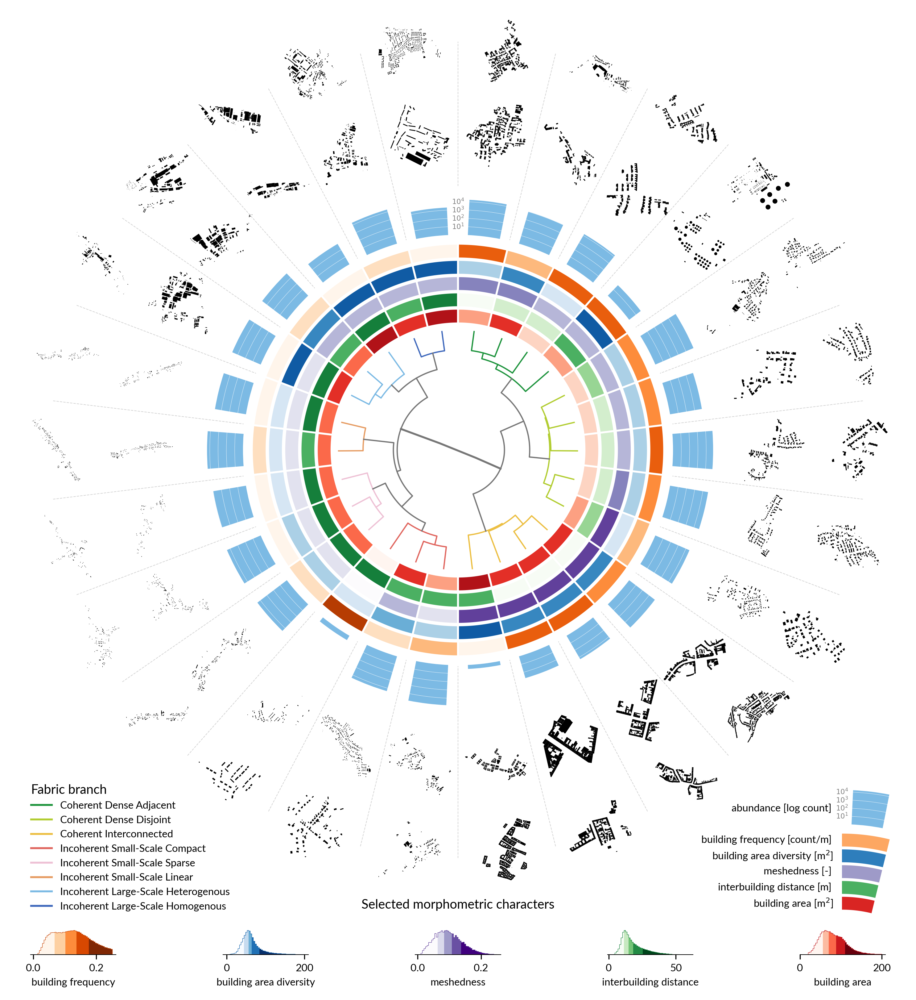
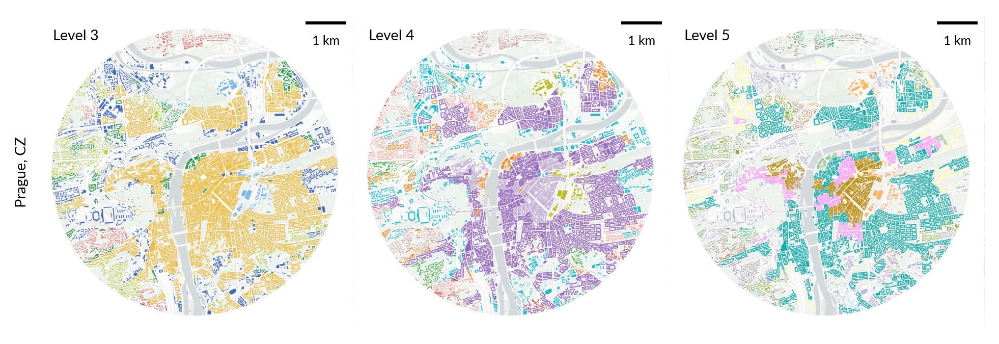
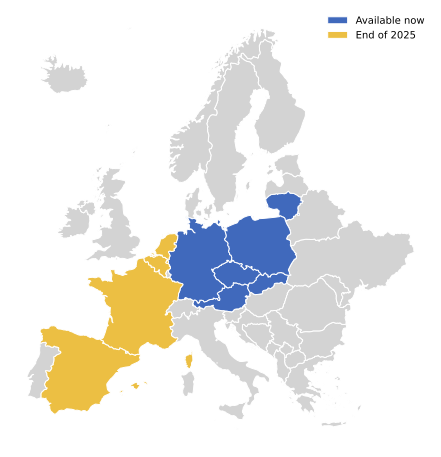
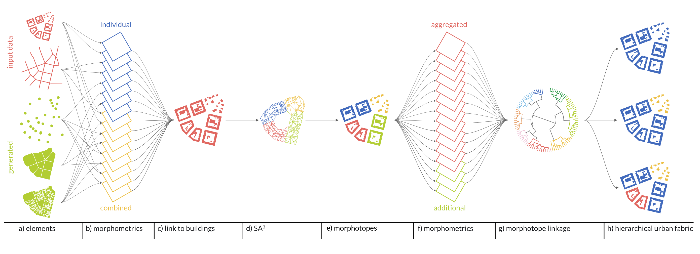

Urban Taxonomy is a classification of built-up fabric. It divides cities into regions of consistent patterns of urban form (think about buildings and street layouts, compositions, and configurations) and connects them via a taxonomic tree. That, in turn, encodes how similar different regions are.
What do we mean by taxonomic tree?

The central part of the image contains the top branches of the taxonomy with examples of patterns for each branch on the outside of the figure. The more similar their patterns are, the closer they are in the hierarchy.
The first three levels of the taxonomy are named. You can check the names alongside a short description below. To see them, check the map.
TipTypes of built-up fabric
TipNames on level 1
Descriptions and names for the first two branches (level 1)
Cluster name
Cluster Description
Incoherent Fabric
Incoherent fabric covers a wide morphological variety, with a common theme of partial or complete breakage of the traditional structural roles of streets, plots, and buildings. Common for modernist period, post-modern, and industrial developments, this branch typically has a less connected street network and may showcase buildings facing open spaces and internal parts of blocks rather than streets. At the same time, it contains less defined village developments.
Coherent Fabric
In coherent fabric, all streets, plots, and buildings take their traditional structural roles in defining the spatial arrangement of the urban form. It is common for traditional European development with densely connected street networks and legible plot structure, facilitating direct relation between buildings and streets.
TipNames on level 2
Descriptions and names for the first four branches (level 2)
Cluster name
Cluster Description
Incoherent Large-scale Fabric
Incoherent large-scale fabric captures typically urban development composed of buildings larger than the average, that may or may not be far from each other, creating large open spaces. Streets tend to be of an utilitarian use, rather than a structural one, typical for modernist housing estates or industrial zones.
Incoherent Small-scale Fabric
Incoherent small-scale fabric is mostly non-urban development capturing various kinds of villages and small towns, which show high variation of morphological properties. Buildings tend to be smaller, but distances between them vary, as well as the relations between buildings and streets.
Coherent Interconnected Fabric
This cluster has very high built-up density and local street connectivity, with narrow and short streets. It is primarily characterised by a high count of connected buildings forming enclosed blocks with courtyards. Furthermore, the distances between the formed blocks is small.
Coherent Dense Fabric
Dense fabric captures morphology typical for urban residential areas with lower density, where blocks are defined by streets more than buildings. The street networks are well defined and connected with buildings being either adjacent (e.g. row houses) or disjoint (e.g. urban villas).
TipNames on level 3
Descriptions and names for the first eight branches (level 3)
Cluster name
Cluster Description
Incoherent Large-scale Homogeneous Fabric
This cluster consists of the large buildings with moderate variations in size and shape, as well as low to moderate street connectivity and wide streets. The resulting environment is spacious, with significant open areas between structures, typical of modernist housing.
Incoherent Large-scale Heterogeneous Fabric
This cluster consists of the largest buildings with notable variations in size and shape, as well as low to moderate street connectivity and wide streets. The design does not emphasize sunlight exposure, creating broad but less refined configurations, typical of industrial and other service areas.
Incoherent Small-scale Linear Fabric
This cluster has a moderate built up area and the low local street connectivity in the taxonomy, typically forming long linear villages. Its streets are long, linear, wide and there are minimal shared walls between structures.
Incoherent Small-scale Sparse Fabric
This cluster is characterized by low built-up density, low street connectivity, large distances between buildings, few shared walls, and large open spaces around buildings. The streets are few, open and wide. The buildings are small to moderate in size and their layout is more typical of rural areas.
Incoherent Small-scale Compact fabric
This cluster has low to moderate built-up area and street connectivity. Buildings exhibit a consistent alignment among themselves and also along streets of varying length, width and linearity. There is also a significant number of shared walls between structures.
Coherent Interconnected Fabric
This cluster has very high built-up density and local street connectivity, with narrow and short streets. It is primarily characterised by a high count of connected buildings forming enclosed blocks with courtyards. Furthermore, the distances between the formed blocks is small.
Coherent Dense Disjoint Fabric
This cluster has moderate to high built-up density and local street connectivity, with longer and wider streets compared to other dense developments. Shared walls between buildings are less common, and distances within buildings are moderate, reflecting a pattern of standalone structures within a robust street network .
Coherent Dense Adjacent Fabric
In this cluster, the built-up density and local street connectivity are high, while inter-building distances remain relatively small. Buildings frequently share walls, forming larger structures along relatively short and narrow streets.
The flexibility of the hierarchy means that you can subdivide a city into many types based on your preference. From 2 (Coherent and Incoherent) to thousands, if you wish.

Coverage
The images above show just one level of the taxonomy in two cities, Prague and Vienna. However, the classification currently covers 6 countries (Austria, Czechia, Germany, Lithuania, Poland, and Slovakia), with more to come soon.

Who
The classification has been developed by Dr. Martin Fleischmann and Dr. Krasen Samardzhiev from the Department of Social Geography and Regional Planning of Charles University. The team further includes Anna Brázdová, Daniela Dančejová, Lisa Winkler (University of Freiburg), and Eliška Pospěchová.
Citation
The paper is currently under review. In the meantime, please cite the preprint.
@misc{fleischmann2025Hierarchical,title = {The {{Hierarchical Morphotope Classification}}: {{A Theory-Driven Framework}} for {{Large-Scale Analysis}} of {{Built Form}}},shorttitle = {The {{Hierarchical Morphotope Classification}}},author = {Fleischmann, Martin and Samardzhiev, Krasen and Br{\'a}zdov{\'a}, Anna and Dan{\v c}ejov{\'a}, Daniela and Winkler, Lisa},year = {2025},month = sep,number = {arXiv:2509.10083},eprint = {2509.10083},primaryclass = {cs},publisher = {arXiv},doi = {10.48550/arXiv.2509.10083},urldate = {2025-09-16},archiveprefix = {arXiv},keywords = {Computer Science - Computers and Society}}
How
The detailed overview of the method is available in the research paper. Let’s take a quick look at how it works.

Gather building footprints and street networks. Clean them up and generate a few more elements capturing built fabric.
Measure morphometric attributes on all of the elements. See momepy Python package for details.
Link all of the numbers to buildings, by distance or co-location.
Generate morphotopes. These are the smallest localities with a distinctive character among their neighbours. We use a bespoke regionalisation algorithm \(SA^3\).
Aggregate morphometric data onto the morphotope level and measure a few more.
Generate the tree, capturing the similarity between morphotopes.
Get clusters based on a custom level from the tree.
That is roughly it. Again, all the technical details are in the paper.
Code
All components of the work rely on open source software and open data, with the resulting code and data being openly available. Code, with the specification of a reproducible environment, is available at github.com/uscuni/urban_taxonomy and archived at doi.org/10.5281/zenodo.17105270. For data, see Data.
Acknowledgements
The project is funded by Charles University’s Primus programme through the project “Influence of Socioeconomic and Cultural Factors on Urban Structure in Central Europe”, project reference PRIMUS/24/SCI/023.
We would further like to thank Claudia Baranzelli and Daniel Arribas-Bel for fruitful discussions helping shape the final outcome, and Rūta Marija Slavinskaitė, Milda Sutkaitytė, 4ct, and the Institute for Planning and Development Prague for their invaluable feedback on the classification and its applicability.